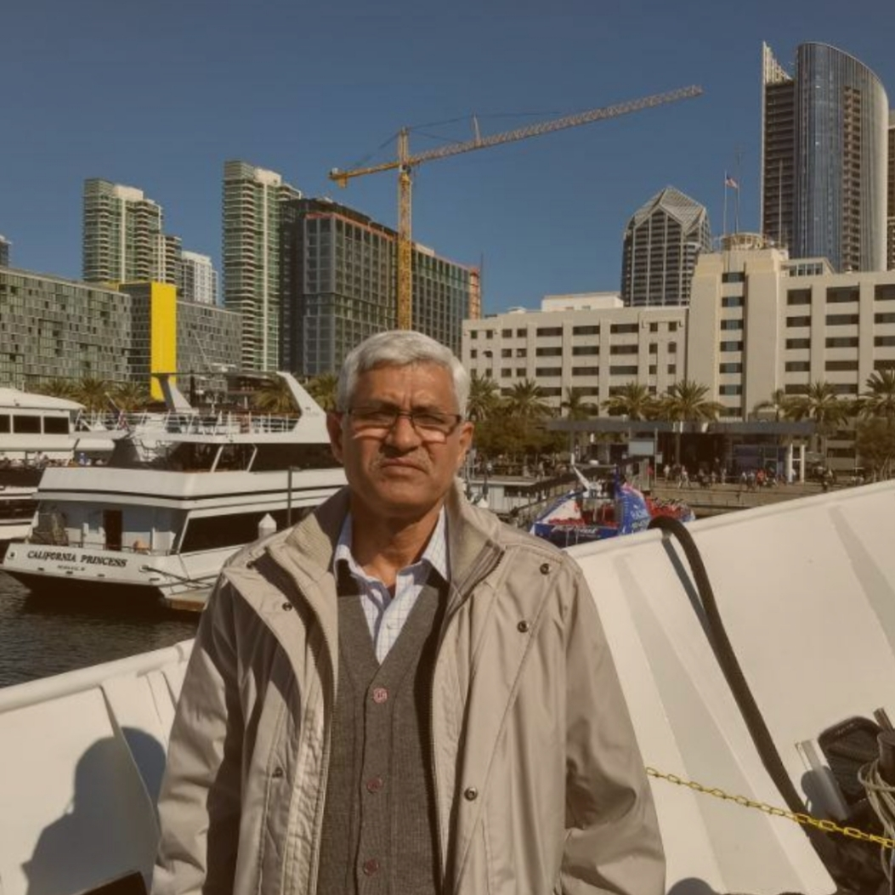

About Me

BIO
Consultant for Structural Design of Industrial & Residential Building, Retrofitting of Buildings, PMC, Structural audit of Buildings.
Retired on 30.04.2017 from NFL as Senior Manager (Civil), Head of Civil Deptt.
Qualifications and Trainings
- A.M.I.S. in Building & Quantity Surveying.
- Two Years Surveyors Diploma.
- Workshop on Cooling Tower Failures-Causation& remedial measures” at CF&CL Kota.
- Workshop on Model Building Bylaws 2016 at PHD House, 4/2, Siri Institutional Area, August Karanti Marg, New Delhi-110016 New Delhi.
Experience
- More than 41 years of experience in Civil construction and maintenance of Different type of Residential, Public, Office Buildings, Road works and heavy equipment foundations of Plant, preparation of estimates & Tenders for different type of Civil works, calling tenders & Award of works etc. at NFL Panipat.
- Construction of Residential Buildings, Institutional & Commercial Buildings, Roads, water supply and Sewage.
- Construction of 2-Kilometer-long Drinking water line of 250 mm dia, CI Pipe from Plant to Township.
- Foundations for Heavy industrial structures, comprising of Pilling work, (18 - 20 meters deep simplex piles).
- Construction of Non-Plant and office Buildings in Plant area.
- Construction of Ash ponds in 175 Acres of Land including water proofing lining with LDPE sheets.
- Construction of 400-Meter-long LSHS unloading RCC Railway plat form.
- Construction of parallel type Cooling Towers, filtration plant.
- Anticorrosive treatment of 60 Meter High Prilling Tower with Epoxy Paint.
- Co-ordinated with Agencies for stability testing of Industrial Buildings.
Achievements
Awarded by National Fertilizers Ltd, with cash and appreciation letters for doing exemplary work.